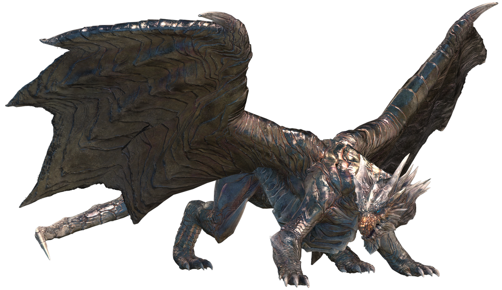
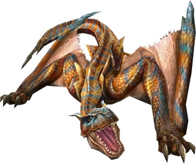
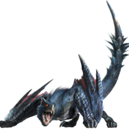
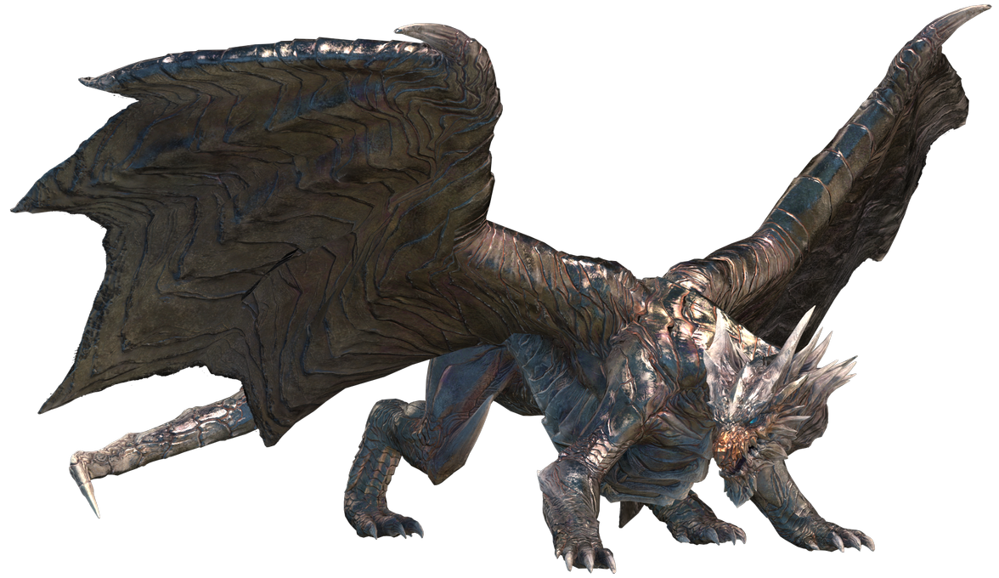
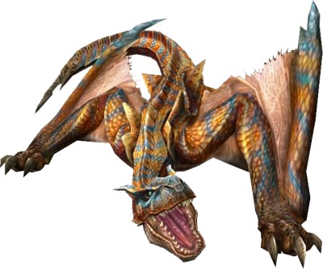
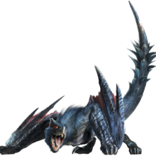

Holi we jsadbjakjbnd
hdfksdbfhkbsd
Holi we jsadbjakjbnd
hdfksdbfhkbsd
Holi we jsadbjakjbnd
hdfksdbfhkbsd
Jefe final de
rango bajo
Jefe final de
rango alto
Jefe final de
rango G
Monster Hunter Freedom Unite
Conocido en Japón como Monster Hunter Portable 2nd G, es un videojuego de la serie Monster Hunter, para PlayStation Portable. Se trata de una expansión de Monster Hunter Freedom 2 y fue lanzado al mercado el 27 de marzo de 2008 en Japón como Monster Hunter 2G. En el Tokyo Game Show de 2008, fue lanzado para el resto del mundo como Monster Hunter Freedom Unite en primavera de 2009.
 





Nuevas características / Cambios en la jugabilidad
- Nuevo sistema de Camarada Felyne para ayudar a los cazadores solos.
- Ocho páginas para la caja de objetos en lugar de seis, con posibilidad de extenderla a diez.
- Nuevas páginas para la Tarjeta de Gremio:
- Información de combate del Felyne.
- Frecuencia de uso de los tipos de armas.
- Un diario mostrando misiones y actividades recientes.
- Ahora puedes almacenar hasta 99 objetos de cada tipo en la caja de objetos.
- Ahora puedes almacenar hasta 20 conjuntos de equipos.
- Nuevos conjuntos de habilidades de la cocina Felyne, por ejemplo, "Danza Felyne" (aumenta las estadísticas en cada gesto "Bailar").
- Puntos de encuentro extra para la captura de insectos y de extracción de mineral con nuevos Minerales e insectos.
- Comprar objetos y enviarlos instantáneamente a la caja de objetos.
- Combinaciones directamente desde la caja de objetos.
- Nuevos tipos de peinados.
- Nuevos trajes para comenzar.
- Puedes cambiar de ropa a través de la estantería.
- Pasar largas escenas de animación de apertura pulsando SELECT. (Lao-Shan Lung, Fatalis, etc.)
- Trenya se puede enviar por 1500 Puntos.
- Trenya puede ser enviado al Gran Bosque.
- Mas de 410 misiones.
- Nueva música para Pantano, Volcán, Desierto y Jungla. (Aunque en el MHP2ndG, las Montañas Nevadas tienen una nueva música).
- Nuevas misiones descargables.
Cambios / Adiciones en el equipamiento
- Nuevas Armas.
- Nuevos conjuntos de armadura y series X y Z.
- Nuevos conjuntos de habilidades, algunos son exclusivos a un conjunto de armadura específica y no se pueden obtener a partir de adornos.
- El ataque Danza Demoníaca de las Espadas Dobles golpea doce veces en lugar de once.
- Las Espadas Dobles pueden tener ahora dos elementos o estados distintos.
- Nuevos revestimientos para arcos: Rev. de alcance (vial blanco que aumenta el daño a corta distancia) y Rev. de pintura (vial de color rosa que funciona como una Bola de pintura).
- Los Cuernos de caza tienen una nueva función en cuenta que funciona como una bomba sonica (Triple nota amarilla).
- Nuevo nivel de afilado: Morado.
- Algunas armas sufren cambios en las estadísticas.
- Nuevas Esferas Armadura: Esfera armadura real y Esfera armadura auténtica.
- Todos los tipos de esfera armadura ahora se pueden hacer mediante una combinación.
- Los disparos explosivos del Arco pueden aturdir a los monstruos.
- Nuevos adornos para habilidades.
Nuevas características de misiones / Cambios en misiones
- Una tercer recepcionista de color amarillo en el Salón del Gremio te da las misiones de rango G.
- El rango de cazador se eleva a 9, la tercer recepcionista da las misiones de rango 7-9.
- Un junto a la anciana de la Aldea te da aventuras de Rango Alto.
- Nuevas áreas: Gran Bosque y Arena Acuática.
- Mapas de la primera generación agregados: Jungla, Volcán, Desierto y Pantano.
- Las aventuras en la Zona de Bosque y Colinas ahora pueden ser de noche.
- Dos nuevas áreas para el Cinturón Volcánico.
- Nuevo sistema de búsqueda llamado "Aventura de Caza Épica" en el que luchan 2 o más monstruos grandes en una aventura, uno a la vez, y los monstruos derrotados se pueden cortar para obtener Mega-Pociones.
- Misión de tesoro ahora se puede jugar en el Gran Bosque.
- Nueva Lanza Pistola de misión contra el Kushala Daora en las Montañas Nevadas (Solo en Japón)
- Mas de 200 nuevas aventuras.